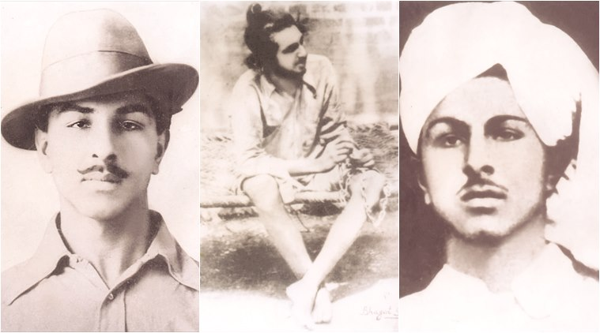

The given image represents various facets of Bhagat Singh's life. Right: Bhagat, when he was on the run from the authorities (1929). Center: Bhagat during his imprisonment (1930). Left: Bhagat during his college time (1923).
Given under is the time line of Singh's life:
Born in September 1907 to a Sikh family in Lyallpur district of Punjab
He was deeply influenced by the active participation of his father and uncles in the independence movements of India
In 1919, at the tender age of 12, he witnessed the Jallianwala Bagh Massacre which solidified his hatred against the British Rule
He followed the Non Co-operation Movement started by Mahatma Gandhi and as a reult left school to enrol in the National College at Lahore
Disillusioned with Gandhi's actions of calling-off the movement, he joined the Youth Revolutionary Movement and started advocating violent overthrow of the unjust Govenment
He founded the Naujawan Bharat Sabha in 1926 and joined the Hindustan Republican Association
When his family asked him to get married, he left his home stating that his life was now dedicated to the freedom of his country
Singh could not believe the violence carried out on the name of religion after witnessing the Hindu-Muslim riots of 1926 and thus dropped his religious beliefs
He was a great writer who studied the works of Bakunin, Lenin, Trotsky and often published his views in the revolutionary newspapers such as Veer Arjun, Kirti, and Naujawan Bharat Sabha leaflets
As a prominent member of HSRA, he conspired to avenge the wrongful death of Lala Lajpat Rai and as a result killed John P. Saunders, Assistant Superintendent of Police, in Lahore on 1928
In April 1929, Singh and an associate bombed the Central Legislative Assembly in Delhi to protest implementation of the Public Safety Bill, shouting the slogan "Inquilab Zindabad!"
He was arrested at the scene and later found guilty and sentenced to life in prison
Through further investigation in 1929, the police established a connection between Bhagat Singh and the Saunders murder case and thus rearrested him.
While awaiting trial in Central Jail Mianwali, he led a hunger strike in prison citing the discrimination between European and Indian prisoners that carried on for 116 days.
Singh and his co-conspirators were then tried and sentenced to hang on 7 October 1930, after the police got statements from his associates, Hans Raj Vohra and Jai Gopal.
Bhagat was executed on March 23, 1931 along with Shivaram Rajguru and Sukhdev Thapar.
Today, Singh is considered one of the most influential revolutionaries of the Indian independence movement
Every year, March 23, is observed as the Shaheedi Divas of Shaheed Bhagat Singh in India
Bhagat Singh's life has inspired several films such as Shaheed-e-Azad Bhagat Singh (1954), Shaheed Bhagat Singh (1963), Shaheed (1965), Shaheed-E-Azam (2002), 23 March 1931: Shaheed (2002), The Legend of Bhagat Singh (2002) and Rang De Basanti (2006) among others.
Find out more about this young revolutionary from these sources: